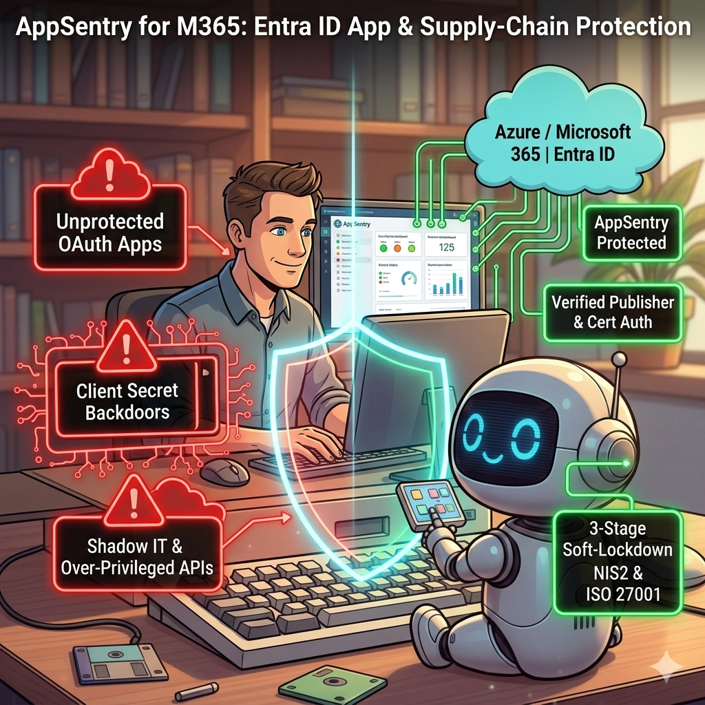

Microsoft 365 unterstützend absichern gegen OAuth- & Supply-Chain-Risiken
Helping Reduce Microsoft 365 Exposure to OAuth & Supply-Chain Risks
AppSentry für M365 analysiert Ihre globalen Entra ID App-Schutzrichtlinien (T-01 bis T-14), gleicht alle Enterprise Apps mit einer kuratierten 24-Monats Threat-Watchlist ab und generiert sichere -WhatIf Lockdown-Playbooks für CISO, Auditoren (NIS2, DORA, ISO 27001) und Admins.
AppSentry for M365 audits your global Entra ID app protection policies (T-01 to T-14), screens every Enterprise Application against a curated 24-Month Threat Watchlist, and generates safe -WhatIf Lockdown Playbooks for CISOs, auditors (NIS2, DORA, ISO 27001), and admins.
git clone https://github.com/MKN1411/AppSentry-for-M365.git
Import-Module .\AppSentry-for-M365\src\AppSentry.psd1 -Force
Invoke-AppSentry -Language DE

Die 3-Block Sicherheits- & Nachweis-Architektur
The 3-Block Security & Audit Architecture
Kein Rätselraten mehr bei kompromittierten Drittanbieter-Apps oder versteckten Client-Secrets: AppSentry liefert volle Transparenz in Sekunden.
No more guesswork around compromised third-party vendors or rogue client secrets: AppSentry delivers full visibility in seconds.
14 Globale Tenant-Richtlinien & Audit-Log
14 Global Tenant Policies & Audit Log
Prüft User Consent, Gruppenbesitzer-Einwilligung, App-Erstellungsrechte und defaultAppManagementPolicy Passwort-Sperren – inkl. Entra Audit-Log-Nachweis (Wer hat wann welche Einstellung geändert?).
Evaluates User Consent, Group Owner Consent, app creation rights, and defaultAppManagementPolicy password restrictions — complete with Entra Directory Audit Log attribution.
24-Monats Threat-Watchlist & Negativhinweis
24-Month Threat Watchlist & Negative Hint
Kann derzeit bekannte Supply-Chain-Vorfälle (z. B. ConnectWise/SkyKick, Midnight Blizzard, eM Client, ungehärtete LotL Admin-CLIs) erkennen und zeigt, welche Risiko-Apps zum Präfzeitpunkt nicht gefunden wurden.
Can detect currently known high-profile supply-chain breaches (e.g., ConnectWise/SkyKick, Midnight Blizzard, eM Client, unhardened LotL Admin CLIs) and provides a Green Negative Hint for apps not present in your tenant.
Umfassendes Inventar & 3-Stufen Soft-Lockdown
Full App Inventory & 3-Stage Soft-Lockdown
Analysiert jede App auf Privilegien-Eskalation (Application.ReadWrite.All) und generiert kopierfertige PowerShell-Skripte mit -WhatIf Simulation und Live-Zustandsprüfung.
Scores every app for privilege escalation paths (Application.ReadWrite.All) and can generate PowerShell scripts for review with -WhatIf dry-run mode and live state verification.
Anleitung
Guide
Voraussetzungen
Prerequisites
PowerShell 7+, Modul Microsoft.Graph (Install-Module Microsoft.Graph -Scope CurrentUser) und eine Entra-Rolle mit Leserechten (z. B. Global Reader oder Security Reader).
PowerShell 7+, the Microsoft.Graph module (Install-Module Microsoft.Graph -Scope CurrentUser) and an Entra role with read access (e.g. Global Reader or Security Reader).
Installation & Demo
Install & Demo
cd AppSentry-for-M365
Import-Module .\src\AppSentry.psd1 -Force
Invoke-AppSentry -DemoMode -Language EN
Der Demo-Modus braucht keine Anmeldung und erzeugt einen Beispielbericht.
Demo mode needs no sign-in and creates a sample report.
Live-Scan
Live scan
Beim ersten Start meldet sich das Tool per Connect-MgGraph mit lesenden Scopes an. Der HTML-Bericht liegt danach im Ordner output.
On first run the tool signs in via Connect-MgGraph with read scopes. The HTML report is then written to the output folder.
Bericht lesen
Reading the report
Block 1: Tenant-Einstellungen. Block 2: Abgleich mit der Watchlist (Stand der Datenbasis). Block 3: App-Inventar. Rot, Orange und Grün sind Hinweise zur Priorisierung, keine Bewertung der Sicherheit insgesamt.
Block 1: tenant settings. Block 2: watchlist comparison (as of the data snapshot). Block 3: app inventory. Red, orange and green are prioritization hints, not an overall security rating.
Lockdown-Skripte
Lockdown scripts
Skripte immer zuerst mit -WhatIf ausführen und in einer Testumgebung prüfen. Änderungen können Anwendungen und Prozesse beeinträchtigen.
Always run scripts with -WhatIf first and review them in a test environment. Changes may affect applications and business processes.
Hinweis
Disclaimer
Die Software wird ohne Gewähr bereitgestellt. Es gibt keine Garantie auf Vollständigkeit, Aktualität oder Schutzwirkung. Die Watchlist ist ein Stand und ersetzt keine eigene Sicherheitsprüfung.
The software is provided as is. There is no guarantee of completeness, timeliness or protective effect. The watchlist is a snapshot and does not replace your own security review.